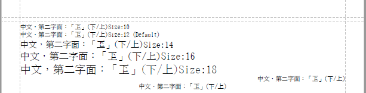

文字內容
- 適用於 PDF
本章主要針對 PDF 輸出文字內容進行說明，因為對 Excel 文件而言，所有內容皆為表格輸出。 一般文件的說明文字，如果沒有特別排版需求，可以直接使用文字輸出模式處理。
- 文字格式相關概念，原則上也適用於表格輸出。
- 若要精細控制文字輸出位置及樣式，一般套用表格輸出會比較簡單。
基本輸出
writeText(…) 提供基本輸出文字功能，可設定字型大小及對齊方式。
預設的字型大小為 itext-config.properties 中的「default.font.size」，也可經由 pdfDocument.setFontSize() 重新設定。基本輸出的預設行高為 1.25 倍字高。
因為預設使用新細明體，所以可以顯示第二字面文字(字型檔:mingliub.ttc)。
@Test
public void test_basicText() {
super.createPDF(pdfDocument -> {
pdfDocument.setFontSize(12); // set Default Size
final String text = "中文，第二字面：「" + "𠀝" + "」(下/上)";
pdfDocument.writeText(text + "Size:10", 10);
pdfDocument.writeText(text + "Size:12 (Default)");
pdfDocument.writeText(text + "Size:14", 14);
pdfDocument.writeText(text + "Size:16", 16);
pdfDocument.writeText(text + "Size:18", 18);
pdfDocument.writeText(text, 10, DocumentAlign.RIGHT);
pdfDocument.writeText(text, 10, DocumentAlign.CENTER);
});
}

預設字型調整
文件預設字型可使用setFontInfo(…)調整。 可參考範例說明，但一般不會頻於設定文件預設字型。
ParagraphBuilder
特殊格式的文字，如粗體、變色，可使用ParagraphBuilder完成。由 pdfDocument 建立paragraphBuilder後，即可逐一用addText(text, fontInfo)加入文字區塊，最後以appendMe()進行輸出。 ParagraphBuilder，也可設定iText原生Paragraph物件中的各項設定值，如對齊、縮排等等…。
在表格欄位中，若要輸出混合格式的文字，原理也與 ParagraphBuilder 相同。